Generative Adversarial Networks
Welcome to this video on generative adversarial networks (GANs) after watching this video, you'll be able explain the concept of generative adversarial networks (GANs) and their significance in machine learning. Demonstrate how to implement a basic GAN using Keras. Generative adversarial networks, GANs, are a revolutionary type of neural network architecture designed to generate synthetic data that closely resembles real data.
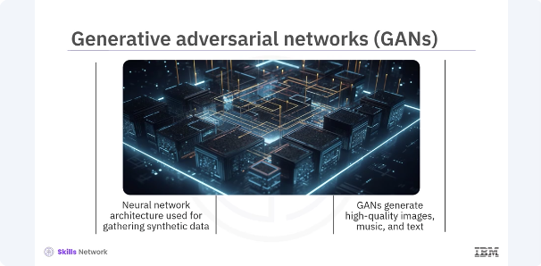
GANs have gained significant attention for their ability to generate high quality images, music, and even text. GANs consists of two main components, a generator and a discriminator. The generator's goal is to create realistic data, while the discriminator's goal is to distinguish between real and generated data. These two networks are trained simultaneously through a process of adversarial training. Through this adversarial process, both networks improve over time, resulting in the generation of highly realistic data.
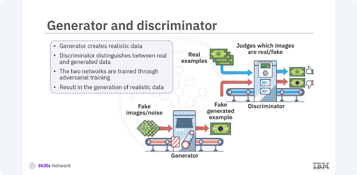
Let's break down how GANs work. The generator takes random noise as input and generates synthetic data. The discriminator receives both real data and synthetic data from the generator and attempts to classify the data as real or fake. The generator is trained to fool the discriminator. The discriminator is trained to classify the data accurately.
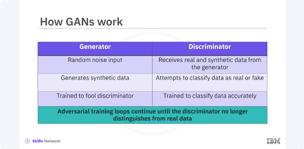
This adversarial training loop continues until the generator can produce data that the discriminator can no longer distinguish from real data.
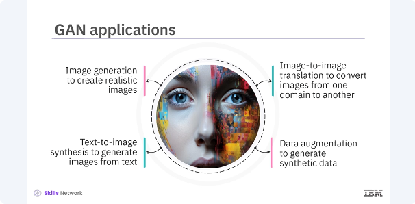
GANs have numerous applications across various fields. Image generation creates realistic images from random noise. Image-to-image translation converts images from one domain to another, such as turning sketches into photographs. Text-to-image synthesis generates images from textual descriptions. Data augmentation generates synthetic data to augment training datasets. These applications demonstrate the versatility and power of GANs in different domains. Lets build a basic GAN in Keras.
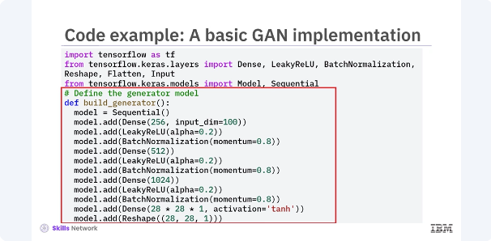
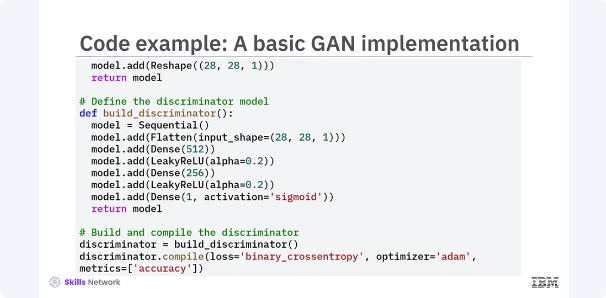
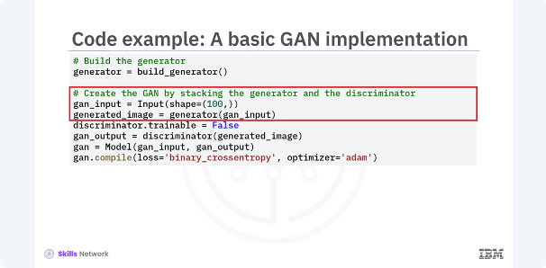
Start by defining the generator and discriminator models, then combine them into a GAN. In this example, two separate models are defined, the generator and the discriminator. The generator takes random noise vector as input and generates a synthetic image, while the discriminator takes an image as input and outputs a probability indicating whether the image is real or fake. Then the GAN is created by combining the generator and discriminator models. The discriminator is set to non trainable when compiling the GAN to ensure that only the generator is updated during the adversarial training.
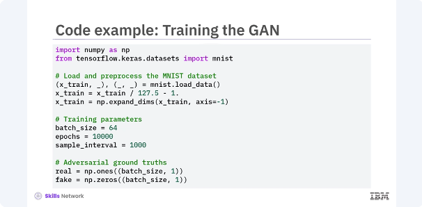
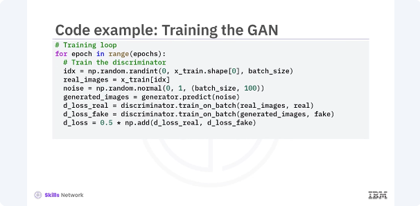
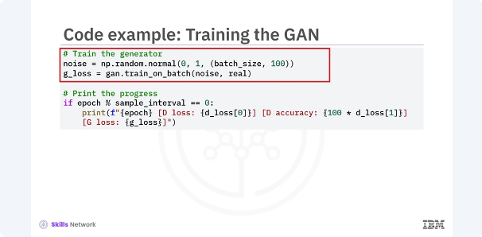
Next you train the GAN. The training process involves updating the discriminator and generator in alternating steps. You train the discriminator on both real and generated data and then train the generator to improve its ability to fool the discriminator. In this example, the code outlines the training loop for the GAN. You first train the discriminator on a batch of real images and a batch of generated images. The discriminators weights are updated to improve its ability to distinguish between real and fake images. Next, you train the generator by feeding it noise vectors and updating its weights to improve its ability to fool the discriminator. This adversarial training process continues for a specified number of epochs.
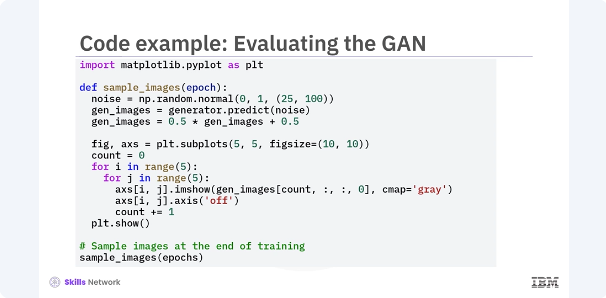
To evaluate the GAN, you can periodically generate and visualize images during training. This helps monitor the quality of the generated images and assess the models progress. In this example, the code generates a grid of images using the trained generator model. By visualizing these images at different stages of training, you can observe how the quality of the generated images improves over time.
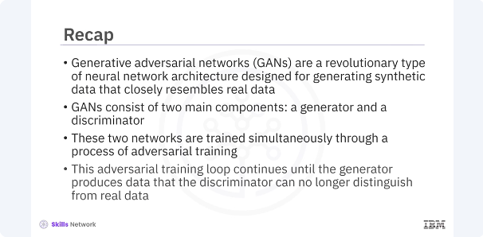
In this video, you learned generative adversarial networks, GANs are a revolutionary type of neural network architecture designed for generating synthetic data that closely resemble real data. GANs consist of two main components, a generator and a discriminator. These two networks are trained simultaneously through a process of adversarial training. This adversarial training loop continues until the generator produces data that the discriminator can no longer distinguish from real data.